Information Geoemtry
Definitions
- Two important and related concepts have emerged
- Practical Identifiability
- Sloppiness
- The eigenvalues of the Fisher Information Matrix seem relevant to each.
- Can we now give a more rigorous definition?
- How small does an eigenvalue need to be to be practically unidentifiable?
- How much do the eigenvalues need to spread to be sloppy?
- Eigenvalues of FIM are problematic.
Fitting Polynomials
Example: Fitting polynomials by least squares on [0,1].
Approach 1: $y = \sum_n \theta_n t^n $
Approach 2: $y = \sum_n \phi_n L_n(t)$ where $L_n(t)$ is the appropriately shifted Legendre polynomial.
Approach 1: $y = \sum_n \theta_n t^n $
$I_{\mu\nu} = 2/(1 + \mu + \nu)$ is the Hilbert Matrix
Approach 2: $y = \sum_n \phi_n L_n(t)$ where $L_n(t)$ is the appropriately shifted Legendre polynomial.
$I_{\mu\nu} = \delta_{\mu\nu}$ is the identity matrix
Poll: Are these the same model?
Parameterization Dependence
Given two parameterizations of a model, $\theta$ and $\phi$, the FIM for the two parameterizations are related by:
$$ \mathcal{I}_\theta = \left( \frac{\partial \phi}{\partial \theta} \right)^T \mathcal{I}_\phi \left( \frac{\partial \phi}{\partial \theta} \right) $$
$\mathcal{I}$ transforms like a covariant rank-2 tensor under reparameterization.
With an appropriate reparameterization, $\mathcal{I}$, can be transformed into any positive (semi-)definite matrix.
$\mathcal{I}$ transforms like a covariant rank-2 tensor under reparameterization.
With an appropriate reparameterization, $\mathcal{I}$, can be transformed into any positive (semi-)definite matrix.
Parameterization Dependence
Possibilities:
- Practical Unidentifiability/Sloppines are consequences of poorly chosen parameters.
They are not properties intrinsic to the model. - Why does sloppiness appear to be so ubiquitous?
- Are we really that bad at modeling?
- There is some other parameterization-invariant characterization.
- Invariance to reparameterization sounds like a geometry problem.
- Positive semi-definite
- Transforms like a covariant rank-2 tensor
- One axis for each data point.
- Observed data becomes a vector $ d_i \rightarrow \vec{\mathbf{d}} $
- Model Predictions become a vector $ y_i(\theta) \rightarrow \vec{\mathbf{y}}(\theta) $
- Varying the parameters, sweeps out a surface: the Model Manifold $\mathcal{M}$
- Embedding Space
- Intrinsic vs. Extrinsic Properties
- Geodesics
- Curvature
- We can imagine the manifold living in (i.e., embedded in) a higher dimensional Euclidean space.
- The Euclidean inner product of the embedding space induces a metric on the manifold. \begin{align} \mathbf{y}(\theta) & \in \mathbb{R}^M, \theta \in \mathbb{R}^N \\ \mathbf{y}(\theta + d \theta) & = \mathbf{y}(\theta) + d \mathbf{y} = \mathbf{y} + \frac{\partial \mathbf{y}}{\partial \theta} d \theta = \mathbf{y}(\theta) + J d \theta \\ dy^2 & = d \mathbf{y} \cdot d \mathbf{y} = d \theta^T \left( J^T J \right) d \theta \end{align}
- $J^T J = \mathcal{I} \equiv g$ is the metric on the tangent space.
- We refer to the embedding space as "data space" and denote it by $\mathcal{D}$.
- One Euclidean embedding dimension for each residual.
- Distance is in units of standard deviations of the data. (Each data-space axis is $y_i(\theta)/\sigma_i$)
- For a general probability distribution, let $P_i(\theta)$ be the probability of the i$^{th}$ outcome. ($i$ is a continuous index for probability densities)
- Let $z_i(\theta) = \sqrt{P_i}$, so that $\mathcal{M}$ is a subset of the hyper-sphere.
- Exercise: Show that a Euclidean distance in-$z$ space induces the FIM as the metric on the tangent space.
- In general, there many ways of isometrically embedding a particular manifold.
- Properties that depend on the embedding are called extrinsic.
- Properties independent of the embedding are called intrinsic.
- The metric, $\mathcal{I}$, is by definition intrinsic.
- Much of the foundational work in Information Geometry by Amari and others focuses on intrinsic properties.*
- Extrinsic properties are useful for statistics and pioneered by Bates and Watts.**
- Observed data is off the manifold.
- Cost = distance through embedding space to the data.
- Extrinsic curvature $\implies$ local minima in cost surface.
- Generate a sampling of points in parameter space.
- Grid in parameter space
- Sample geometrically motivated distributions (Ben Machta)
- Find the model predictions (vector) for each point and arrange them (mean shifted) in a matrix $$ \tilde{\mathbf{y}}_i = \mathbf{y}_i - \frac{1}{P} \sum_j \mathbf{y}_j $$ $$ M = \left[ \tilde{\mathbf{y}}_1 \tilde{\mathbf{y}}_2 \dots \tilde{\mathbf{y}}_P \right] $$
- Perform a PCA of these points: $$ M = U \Sigma V^T$$
- Plot the first several PCA directions: $$ U \Sigma = M V $$
- Special paths on the model manifold.
- Satisfies a differential equation.
- Parallel transport of tangent vector.
- Initial Value Problem
- Distance minimizing curves
- (When using the metric connection)
- Boundary Balue Problem
- Intrinsic (Riemann) Curvature
- Extrinsic Curvature
- Parameter-Effects Curvature
- Intrinsic Curvature $\implies$ Extrinsic Curvature
- Converse not true
- Ruled surfaces
- Zero intrinsic curvature but nonzero extrinsic curvature
- Example: Cylinder
- Large Extrinsic curvature associated with local minima of the cost
- Non-standard
- Introduced by Bates and Watts.*
- Bending/Stretching of the coordinate grid on the model manifold
- Same information as the connection coefficients
- In most cases it is much larger than either extrinsic or intrinsic curvatures
- Is there a parameterization-independent (geometric) characterization of sloppiness?
- Use geodesics to construct new coordintes
- By construction: minimal parameter effects curvature (why not zero?)
- Nonlinear fitting problems are notoriously hard. (Why?)
- Fitting in geodesic coordinates would be easy!
- Geodesic Accelerated Levenberg-Marquardt
Information Geometry
The Fisher Information has all the properties of a Riemannian metric:
Let's take this interpretation literally. Perhaps there is a geometric insight (i.e., parameterization invariant) into why some models are unidentifiable and sloppy.
Our approach: Computational differential geometry using the FIM as the metric.
Let's take this interpretation literally. Perhaps there is a geometric insight (i.e., parameterization invariant) into why some models are unidentifiable and sloppy.
Our approach: Computational differential geometry using the FIM as the metric.
Two Exponential Example:
$y(t, \theta) = e^{-\theta_1 t} + e^{-\theta_2 t}$
 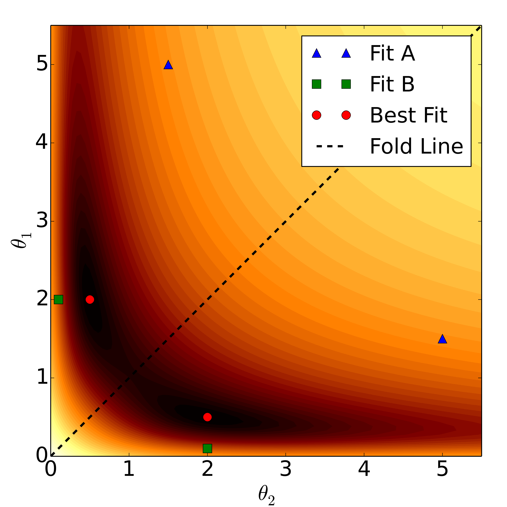
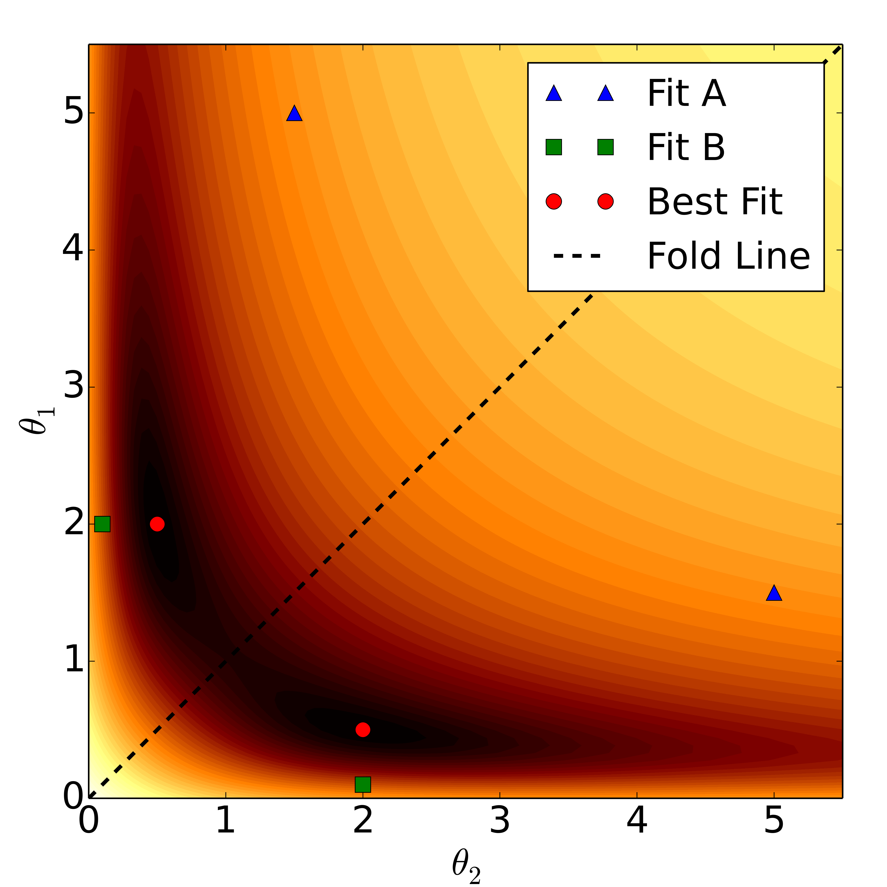
Data Space:
Quiz:
The dimensionality of the embedding space? (3 in this case?)
The number of data points
The dimensionality of the model manifold? (2 in this case?)
The number of locally structurally identifiable parameters
The dimensionality of the embedding space? (3 in this case?)
The number of data points
The dimensionality of the model manifold? (2 in this case?)
The number of locally structurally identifiable parameters
Review of Important Geometric Concepts
Embedding Space
Least Squares Embedding
We have already seen in the toy example:
General Emedding
Intrinsic vs. Extrinsic
*Amari, Shun-ichi, and Hiroshi Nagaoka. Methods of information geometry. Vol. 191. American Mathematical Soc., 2007.
**Bates, Douglas M. Watts, Donald G. Douglas M. Bates, and Donald G. Watts. Nonlinear regression analysis and lts applications. No. 519.536 B3. 1988.
**Bates, Douglas M. Watts, Donald G. Douglas M. Bates, and Donald G. Watts. Nonlinear regression analysis and lts applications. No. 519.536 B3. 1988.
Visualizations
The high dimensionality of $\mathcal{D}$ and $\mathcal{M}$ make visualizations difficult.
One approach:
One approach:
Gallery of Model Manifolds
$y = e^{-\theta_1 t} + e^{-\theta_2 t}$
$N = 2$ Parameters
$M = 3$ Data points
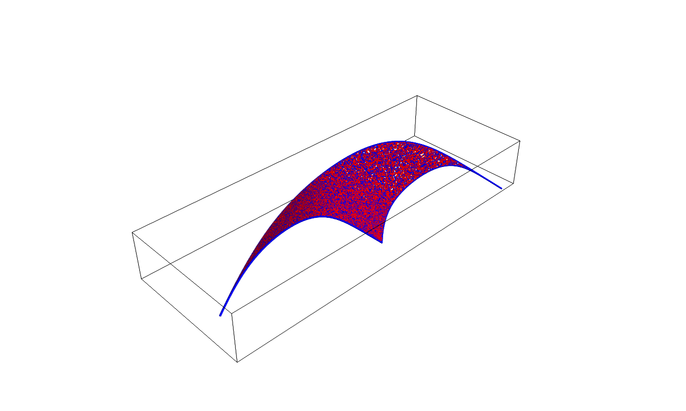
$N = 2$ Parameters
$M = 3$ Data points
$y = e^{-\theta_1 t} + e^{-\theta_2 t} + e^{-\theta_3 t}$
$N = 3$ Parameters
$M = 5$ Data points
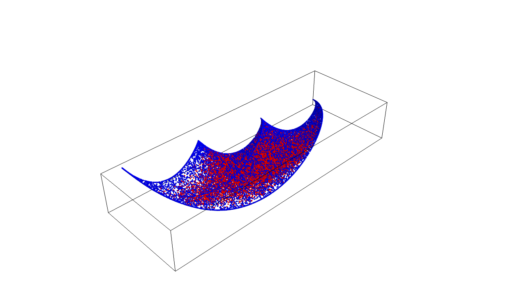
$N = 3$ Parameters
$M = 5$ Data points
Enzyme Catalyzed Reaction (Minpack-2)
$N = 4$ (2 Dimensional Cross Section) Parameters
$M = 11$ Data points
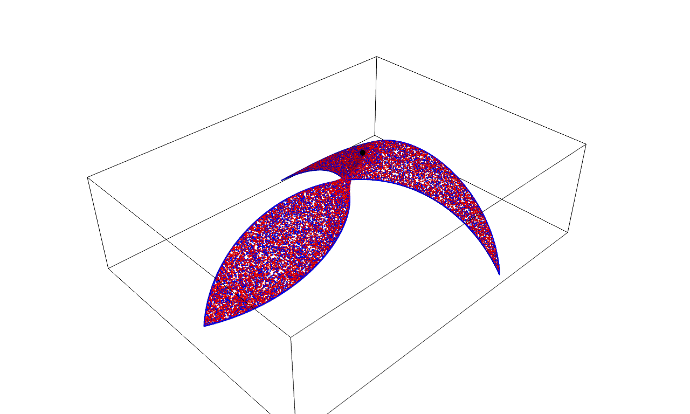
$N = 4$ (2 Dimensional Cross Section) Parameters
$M = 11$ Data points
Chebychev Quadrature (Minpack-2)
$N = 3$ Parameters
$M = 5$ Data points
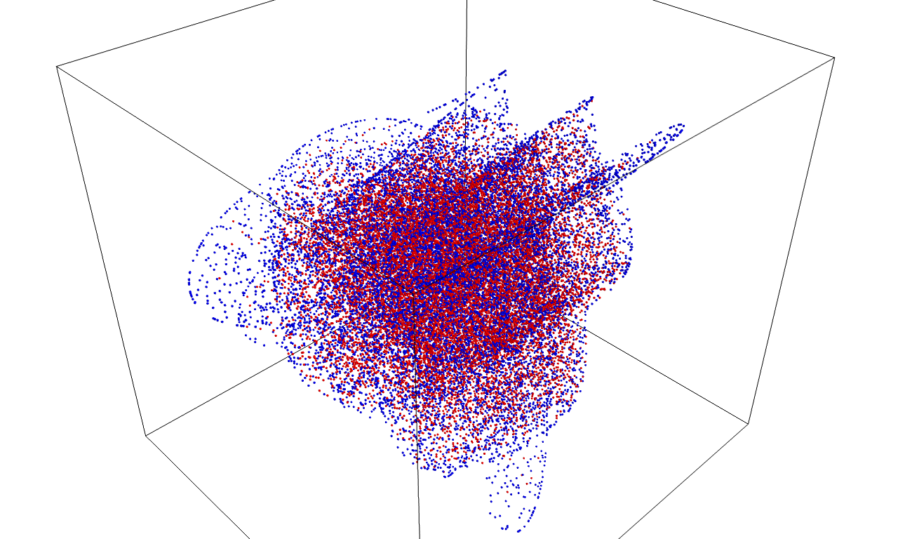
$N = 3$ Parameters
$M = 5$ Data points
Isomerization of α-pinene (Minpack-2)
$N = 5$ Parameters
$M = 40$ Data points
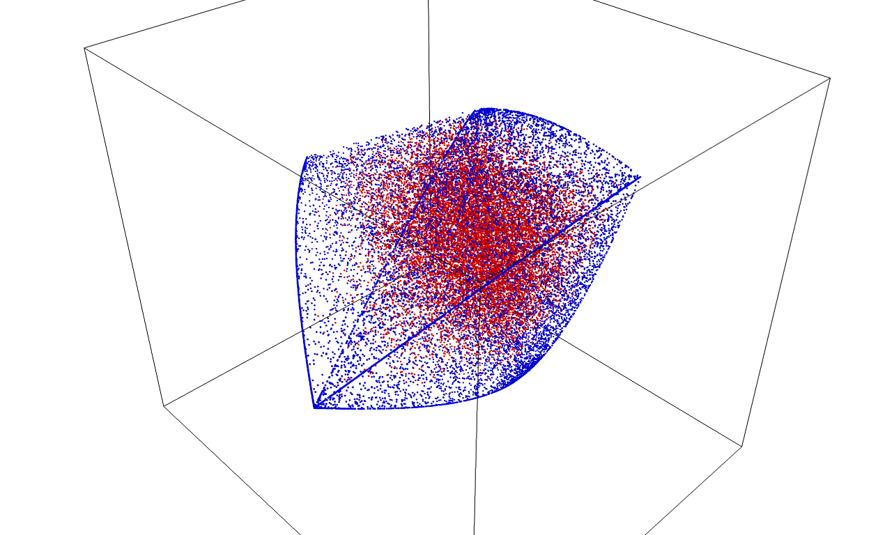
$N = 5$ Parameters
$M = 40$ Data points
2D Ising Model (2x2 Unit cell)
$N = 2$ Parameters (couplings only)
$M = 16$ "Data points" (16 distinct states)
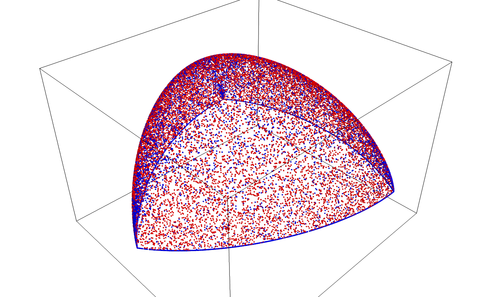
$N = 2$ Parameters (couplings only)
$M = 16$ "Data points" (16 distinct states)
Geodesics
Curvature
Three types of curvature:
Intrinsic vs. Extrinsic
Measure of Extrinsic Curvature
Geodesic Curvature
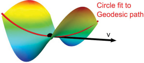
\begin{align}
J & = \partial \mathbf{y} = U\Sigma V^T, P^N = \mathbb{1} - UU^T \\
\mathbf{v} & = J \dot{\theta}, \mathbf{a} = P^N \partial_\mu \partial_\nu \mathbf{y} \dot{\theta}^\mu \dot{\theta}^\nu \\
K & = R^{-1} = \frac{|\mathbf{a}|}{|\mathbf{v}|^2}
\end{align}
Shape Operator
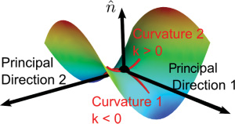
$$ S_{\mu\nu} = \hat{\mathbf{n}} \cdot \partial_\mu \partial_\nu \mathbf{y} $$
Transtrum, Mark K., Benjamin B. Machta, and James P. Sethna. "Geometry of nonlinear least squares with applications to sloppy models and optimization." Physical Review E 83.3 (2011): 036701.
Parameter-Effects Curvature
*Bates, Douglas M., and Donald G. Watts. "Relative curvature measures of nonlinearity." Journal of the Royal Statistical Society. Series B (Methodological) (1980): 1-25.
Transtrum, Mark K., Benjamin B. Machta, and James P. Sethna. "Geometry of nonlinear least squares with applications to sloppy models and optimization." Physical Review E 83.3 (2011): 036701.
Transtrum, Mark K., Benjamin B. Machta, and James P. Sethna. "Geometry of nonlinear least squares with applications to sloppy models and optimization." Physical Review E 83.3 (2011): 036701.
Geometric Sloppiness: Widths and Curvatures
Transtrum, Mark K., Benjamin B. Machta, and James P. Sethna. "Why are nonlinear fits to data so challenging?." Physical review letters 104.6 (2010): 060201.
Interpolation (Preview)
Why is the model manifold so thin?
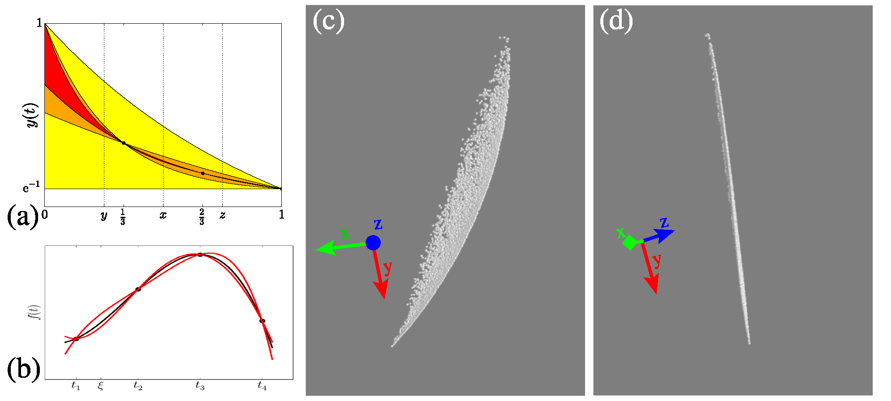
Transtrum, Mark K., et al. "Perspective: Sloppiness and emergent theories in physics, biology, and beyond." The Journal of chemical physics 143.1 (2015): 010901.